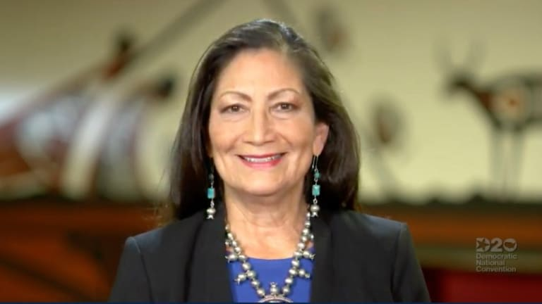

A group of Indigenous men cycling more than 800 miles say they have one goal in mind: to bring hope and healing for Black and Indigenous men.
One of two Diné soldiers to die this year while based at Fort Hood collapsed while running with his platoon as part of an early morning workout, and foul play is not suspected, U.S. Army officials say.

Shortly after millions of Americans listened to performances from John Legend and Common, they heard from one of the first Native women elected to Congress.
The National Congress of Americans Indians and more than a dozen tribal nations have joined a growing effort to get President Donald Trump to block a Navajo citizen’s execution, set to take place in less than a week.
A prominent part of the Democratic National Convention is the roll call. It is the process where individual states formally elect a presidential nominee.
Bright blue lights. Jam-packed arenas. Colorful signs waving in the crowd. Those are usually the sights and sounds of the Democratic National Convention.
Tuesday’s primaries feature a cohort of female candidates seeking state and federal office, including the first Native woman in Wyoming to run for Congress.
Lezmond Mitchell is set to be put to death Aug. 26 for killing an elderly woman and her granddaughter.
Joe Biden’s VP pick gained experience with tribes as California’s attorney general, as a U.S. senator and as a presidential candidate.
The Democratic congresswoman, who is seeking a second term, talks to Indian Country Today about her priorities and campaigning in a pandemic.
All four Native candidates running for office in Kansas won their primary elections Tuesday, including one who is the presumptive winner of a state House seat, and will become Kansas' youngest sitting legislator, after no one filed to run against her in November.
A Tuesday panel featured seven female leaders in Indian Country who have endorsed former vice president Joe Biden’s presidential campaign.